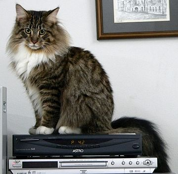
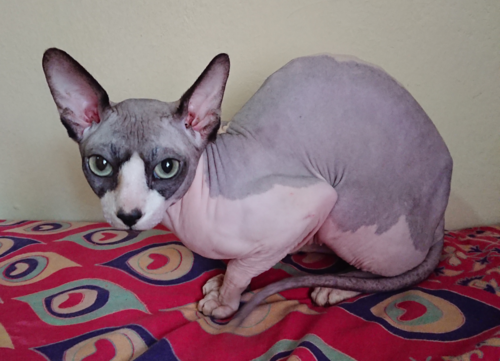
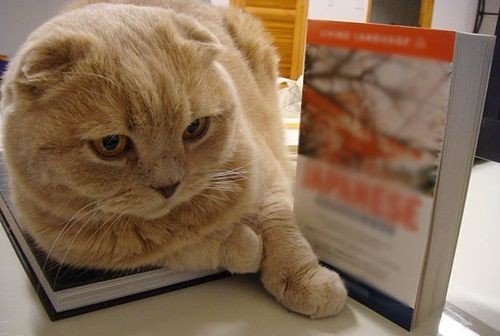

Мої улюблені породи котів
Тут я розповім тобі про деяких дуже крутих котів.
Мейн-кун
Мейн-кун — це такий великий і пухнастий кіт! Вони як маленькі єноти, але дуже ласкаві та розумні. Люблять гратися і дружити.
Більше про Мейн-кунів: Вікіпедія
Сфінкс
Сфінкс — це кіт без шерсті! Виглядають дивно, але вони дуже милі та активні. Їм треба тепло, щоб не мерзнути.
Більше про Сфінксів: Вікіпедія
Шотландська висловуха
Шотландська висловуха — це кіт із смішними загнутими вушками. Вони дуже спокійні і люблять сидіти в незвичних позах. Котик-плюшка.
Більше про Шотландських висловухих: Вікіпедія
Скільки коштують ці коти?
| Порода | Приблизна ціна ($) | Коротка інфо |
|---|---|---|
| Мейн-кун | 800 - 2000 | Дуже великий і пухнастий |
| Сфінкс | 1000 - 3000 | Кіт без шерсті, любить тепло |
| Шотландська висловуха | 500 - 1500 | Загнуті вушка, спокійний |
| Британська короткошерста | 700 - 1800 | М'який як плюшева іграшка |
| Бенгальська кішка | 1500 - 5000+ | Виглядає як міні-леопард! |
Ціни можуть бути різні, залежить від кошеняти та де купувати.